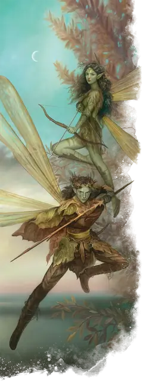

Спрайт
Sprite
Крошечная Фея, Нейтральная Добрая

Класс Защиты 15 Инициатива +4 (14)
Хиты 10 (4к4)
Скорость 10 футов, Полёта 40 футов
| мод | спас | ||
|---|---|---|---|
| СИЛ | 3 | −4 | −4 |
| ЛОВ | 18 | +4 | +4 |
| ТЕЛ | 10 | +0 | +0 |
| мод | спас | ||
|---|---|---|---|
| ИНТ | 14 | +2 | +2 |
| МДР | 13 | +1 | +1 |
| ХАР | 11 | +0 | +0 |
Чувства пассивное Восприятие 13
Языки Общий, Сильван, Эльфийский
Опасность 1/4 (50 опыта; БВ +2)
Действия
Меч-игла. Бросок рукопашной атаки: +6, досягаемость 5 фт. Попадание: 6 (1к4 + 4) Колющего урона.
Зачаровывающий лук. Бросок дальнобойной атаки: +6, дистанция 40/160 фт. Попадание: 1 Колющего урона, и цель получает состояние Очарованный до начала следующего хода спрайта.
Понимание эмоций. Спасбросок Харизмы: Сл 10, одно видимое спрайтом существо в пределах 5 футов (Небожители, Исчадия и Нежить автоматически проваливают спасбросок). Провал: Спрайт узнаёт эмоциональное состояние и мировоззрение цели.
Невидимость. Спрайт сотворяет заклинание Невидимость на себя, не нуждаясь в компонентах заклинания и используя Харизму как заклинательную характеристику.
Бонус мастерства +2
Среда обитания Леса, Страна фей
Сокровища Оружейные